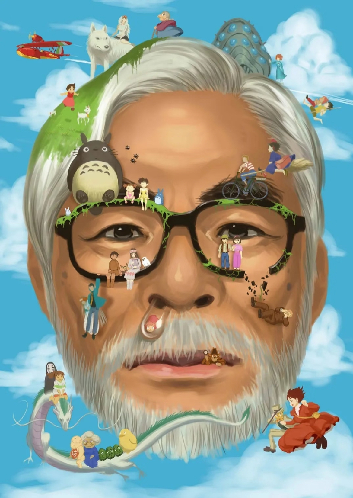

Miyazaki Hayao
Master of Animation & Storytelling
Born January 5, 1941 | Director, Producer, Screenwriter, Animator
Early Life & Career
Miyazaki Hayao was born in Tokyo during World War II. His father worked in the family business, Miyazaki Airplane, which manufactured parts for fighter planes. This early exposure to aviation would later influence many of his films.
He studied economics and political science at Gakushuin University, where he became interested in animation after seeing "The Tale of the White Serpent" (1958), Japan's first color anime feature film.
Studio Ghibli
Founded in 1985 with Isao Takahata and Toshio Suzuki, Studio Ghibli became synonymous with high-quality animation and storytelling. The studio's name comes from the Italian Caproni Ca.309 Ghibli aircraft.
Under Miyazaki's direction, Studio Ghibli produced some of the most beloved animated films in cinema history, earning international acclaim and numerous awards.
Artistic Philosophy
Miyazaki's work is characterized by strong environmental themes, complex characters (especially strong female protagonists), and a deep respect for traditional Japanese culture while embracing universal human values.
He believes in hand-drawn animation and often incorporates themes of flight, nature, and the relationship between humans and the environment.
Global Impact
His films have been translated into dozens of languages and have influenced animators and filmmakers worldwide. "Spirited Away" became the highest-grossing film in Japanese history and won the Academy Award for Best Animated Feature.
Miyazaki's work transcends cultural boundaries, appealing to audiences of all ages across the globe.